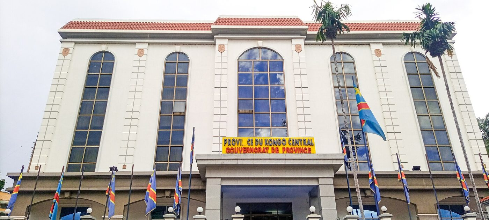
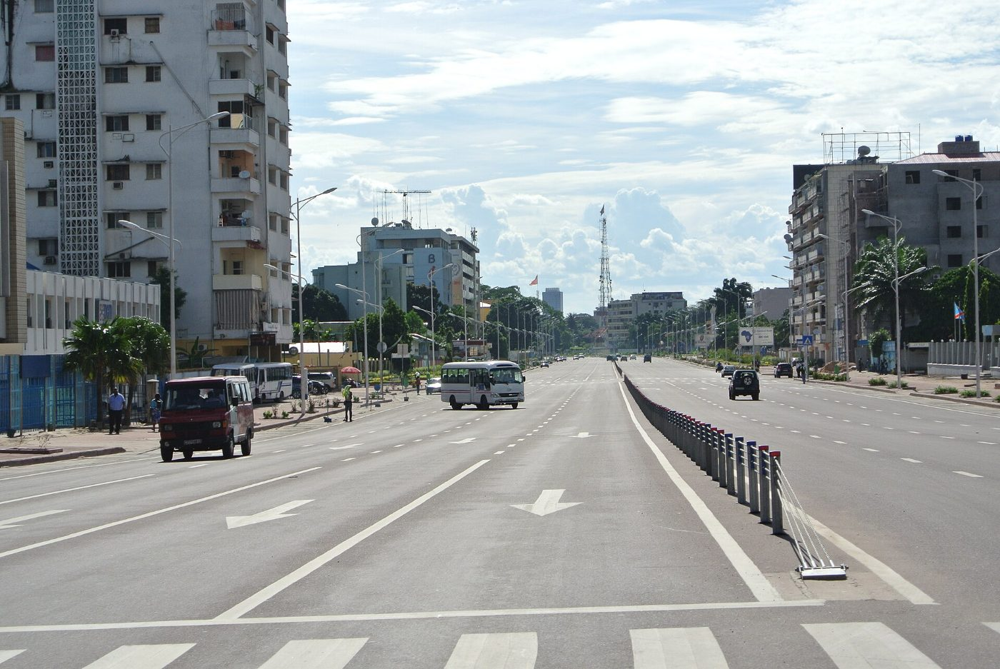

Contact
Ventes, logistique, communautés, presse : voici qui joindre. Nous répondons sous deux jours ouvrés.
Nos points de contact
Terminal de Kinshasa-LimeteBéton, enlèvements, barges+243 81 000 00 02ventes@cimenterie-du-fleuve.cd
Route de la Carrière, Quartier Ville-Basse, Matadi, Kongo Central, RD Congo
Demande de devis
Réponse sous un jour ouvré.
Écrire à la société
Horaires
- Comptoir usine, MatadiLundi–samedi, 7 h – 17 h
- Terminal de LimeteLundi–samedi, 6 h – 18 h
- Dépôts de Boma et KikwitLundi–samedi, 7 h – 16 h
- Ligne verte7 jours sur 7, 24 h/24
Mentions légales
- Dénomination
- Cimenterie du Fleuve SA, société anonyme au capital de 48 000 000 000 FC
- Siège
- Route de la Carrière, Ville-Basse, Matadi, Kongo Central
- RCCM
- CD/MAT/RCCM/14-B-0217
- Id. Nat.
- 01-H4900-N31207K
- NIF
- A1409876Q
- Directrice de la publication
- Mireille Nsimba Lukoki
- Hébergement
- Serveurs situés à Kinshasa, RDC, avec copie de secours chiffrée
- Données personnelles
- Les formulaires collectent uniquement les données nécessaires à la réponse. Elles sont conservées 12 mois puis supprimées. Droit d'accès, de rectification et d'effacement par e-mail à contact@cimenterie-du-fleuve.cd, conformément à l'ordonnance-loi n° 23/010 du 13 mars 2023 portant Code du numérique.
- Cookies
- Aucun traceur publicitaire. Stockage local limité au choix de langue et aux préférences de consentement.

Boulevard du 30 juin, Kinshasa (Antoine Moens de Hase, CC BY 2.0).